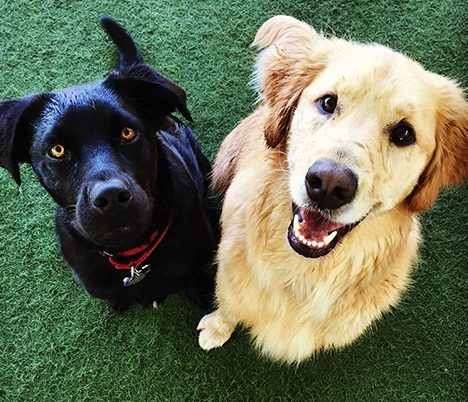

Located in inner SE Portland, our 14,000 sq. ft. facility has a park-like atmosphere with specially designed
outside and inside play yards for your dog to romp, play and socialize in. Established in 2006, Dogs Dig It is
one of Portland’s most experienced dog daycare and lodging facilities. Our well trained dog loving staff team
works together to meet the needs of all our dog clients, specializing in safe, supervised all day doggie
daycare and open play overnight boarding. We also have a full service dog grooming salon, for all of your dogs
beauty needs.
Daycare

Drop Off (starting at 6:30am)
After a friendly greeting from the front desk attendant, the daycare team chooses which pack of dogs would be
the best fit for me today, keeping in mind any quirks I have and who my friends are!
During the day
I run around and play with friends, grab a few head scratches from my favorite DDI humans, and maybe take a nap
in the sun during the afternoon. On a warm day the staff will fill up the swimming pools for me. On a chilly day
they will make sure I have a warm jacket and give me access to the indoors so I can stay comfortable while I
play.
Pick Up (last pick-up at 6:30pm)
The front desk attendant retrieves me from the daycare yard and returns me to my parents. They always tell them
how my day was and who I played with! After a long day of daycare, I’m ready for a quiet night at
home!
Full Day$30
Your dog can join our pack for the day and romp in one of our indoor/outdoor open-play yards, for up to 12
hours. We offer daycare packages with discounts for buying in bulk!
Full day 5 Pack $145
Full day 10 Pack $280
Full day 20 Pack $540
*Daycare packages expire within 1 year of purchase. Refunds are only available as a credit to your
account.
Partial Day$21
Your dog can join our pack for the day and romp in one of our indoor/outdoor open-play yards, for up to 5 1/2
hours. We offer daycare packages with discounts for buying in bulk!
Partial day 5 Pack $100
Partial day 10 Pack $190
Partial day 20 Pack $360
*Daycare packages expire within 1 year of purchase. Refunds are only available as a credit to your
account.
15 minute walk$25
After spending all day playing, some dogs need a change of pace. Your dog can go on a 15 minute walk through
the beautiful Buckman neighborhood with a senior staff member. Adding a walk to your dogs day is great way for
your pet to get some additional exercise, as well as some one-on-one time with one of of our loving team
members!
Nail Trim$15
Basic Bath$30-35
A basic bath and towel dry provided by the daycare staff. Your choice of Lavender, Oatmeal, or Hypoallergenic
shampoo.
Small Dog (30lbs or less) - $30
Large Dog (31lbs and up) - $35
For additional services such as brush outs, nail smoothing and hair trimming, please visit our grooming section.
Overnight Boarding
Dogs love to stay at Dogs Dig It! Our open play boarding lets dogs play and socialize with friends during the
day and retire to their own personal space in the evenings. We have nearly 14000 square feet for your dog to
play, socialize and kick back with new friends. Schedule a basic bath or a full service groom during your dogs
stay. You can even request a series of walks for your dog! Just ask us how we can make your dogs stay with us as
comfortable and fun as possible.
If you are new to Dogs Dig It, the first step is to call to schedule a temperament evaluation with you and your
dog. During this time we make sure your dog will enjoy their time with us meeting new friends in our large
outdoor play yards.
Per Night$45
Lodging includes a comfy blanket, spacious accommodations, and plenty of affection. We can accommodate most pet
beds, toys, and medication dispensing. Have your dog stay 10 nights or more and get 10% off.
Each Additional Dog$35
We have family kennels so your dogs can stay together.
15 minute walk$25
After spending all day playing, some dogs need a change of pace. Your dog can go on a 15 minute walk through
the beautiful Buckman neighborhood with a senior staff member. Adding a walk to your dogs day is great way for
your pet to get some additional exercise, as well as some one-on-one time with one of of our loving team
members!
Nail Trim$15
Basic Bath$30-35
A basic bath and towel dry provided by the daycare staff. Your choice of Lavender, Oatmeal, or Hypoallergenic
shampoo.
Small Dog (30lbs or less) - $30
Large Dog (31lbs and up) - $35
For additional services such as brush outs, nail smoothing and hair trimming, please visit our grooming section.
Grooming
To make an appointment or to learn more about our full service grooming services~ text, call or email Nancy at
503-360-3516 GROOMER@DOGSDIGITPDX.COM
Nancy has been providing high quality personalized dog grooming for over 10 years. She graduated from
professional grooming school in 2008, specializing in all breed standard cuts as well as modified styles. Dogs
love her patient, kind thoughtful personality.
Nancy believes in making your dog’s grooming visit as stress free and positive as possible. Here at Dogs Dig It,
you'll have a specific appointment time, typically 1-2 hour time slots with extra time built in for stress
breaks if needed. Nancy can easily coordinate a full service groom during an overnight stay or while your dog is
at daycare. She works closely with each of her clients to provide a personalized, positive grooming experience
for both you and your dog.
Deluxe Full Service Bath
Price quotes are offered on dog by dog basis, based on their specific grooming needs.
This service includes:
-A good deep clean with our master groomer in a calm personable environment
-Relaxing bath with a specific shampoo formulated for your dog's specific skin and coat type
-Deep conditioner treatment
-Brush and blow out
-Nail trimming and/or smoothing
-Ear cleaning (plucking on request)
Deluxe Full Service Bath + Haircut
Price quotes are offered on dog by dog basis, based on their specific grooming needs.
This service includes:
-A fully customizable hair cut of your choice based on your dog's specific need and personal style. Specialized breed full body cuts available as well
-Relaxing bath with a specific shampoo formulated for your dog's specific skin and coat type
-Deep conditioner treatment
-Brush and blow out
-Teeth brushing
-Nail trimming and/or smoothing
-Ear cleaning (plucking on request)
 Dogs love to stay at Dogs Dig It! Our open play boarding lets dogs play and socialize with friends during the
day and retire to their own personal space in the evenings. We have nearly 14000 square feet for your dog to
play, socialize and kick back with new friends. Schedule a basic bath or a full service groom during your dogs
stay. You can even request a series of walks for your dog! Just ask us how we can make your dogs stay with us as
comfortable and fun as possible.
Dogs love to stay at Dogs Dig It! Our open play boarding lets dogs play and socialize with friends during the
day and retire to their own personal space in the evenings. We have nearly 14000 square feet for your dog to
play, socialize and kick back with new friends. Schedule a basic bath or a full service groom during your dogs
stay. You can even request a series of walks for your dog! Just ask us how we can make your dogs stay with us as
comfortable and fun as possible.